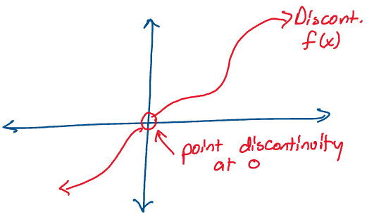
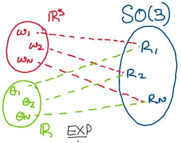
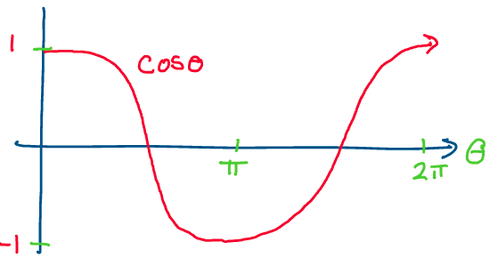
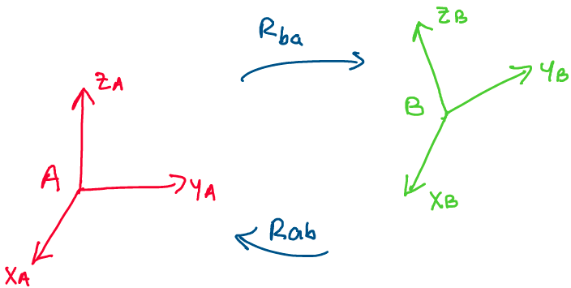
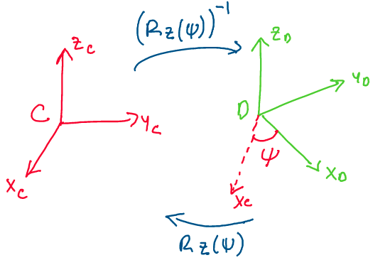
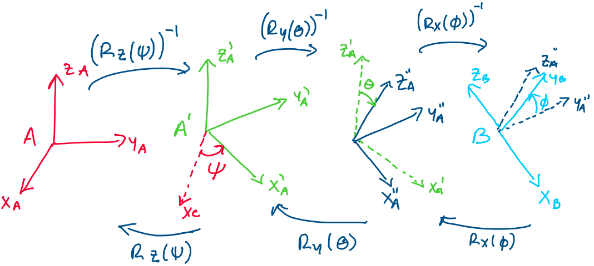
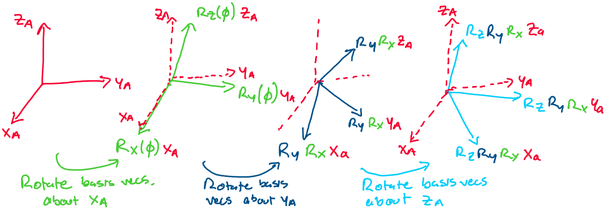
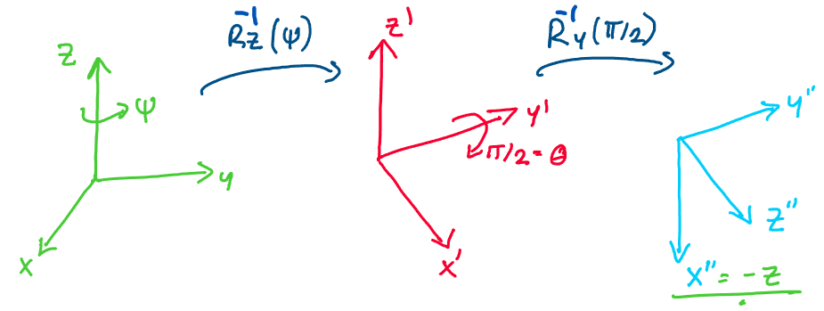

Further Representations of Rotations
Contents
Further Representations of Rotations#
Welcome back! Let’s take a moment to briefly review our developments
from last section. Recall that we constructed a formula, called
Rodrigues’s Formula, which allowed us to describe a full \(3\times3\)
rotation matrix using just an axis of rotation and an angle.
In this section, we’ll work on developing some more details of this
wonderful formula, and verify that it satisfies all of the properties we
expect it to. Let’s get started!
Rodrigues’ Formula: The Finishing Touches#
In the previous section, we developed the approach of using exponential coordinates to describe a rotation in simpler terms. Recall that we developed these exponential coordinates through Rodrigues’ formula, which states that for a unit vector \(\omega\in \mathbb{R}^3\) and a scalar angle \(\theta \in \mathbb{R}\):
In words, this tells us that we should be able to
represent a rotation matrix by an axis of rotation,
\(\omega \in \mathbb{R}^3\) and an angle \(\theta \in \mathbb{R}.\) Recall
that this rotation matrix corresponds to a rotation about the axis
\(\omega\) through an angle \(\theta.\)
But, it’s not enough for us to take this equation simply at face value!
Before we continue using this equation any further, we must formally
verify that \(e^{\hat\omega\theta}\) is actually a valid rotation matrix
in \(SO(3).\) This will provide a strong foundation for the use of the
matrix exponential as we move forwards.
Proposition 8
Exponentials of skew symmetric matrices produce
elements of \(\mathbf{SO(3)}\)
Given any unit vector \(\omega \in \mathbb{R}^3\) and any scalar
\(\theta \in \mathbb{R}\):
Proof: To prove that \(e^{\hat\omega\theta}\in SO(3),\) we need to
show that \(e^{\hat\omega\theta}\) satisfies the two defining properties
of the \(SO(3)\) group. Recall that for any \(R\in SO(3),\) \(R^TR = I\) and
\(\mathrm{det}(R) = 1.\)
Let’s start by proving that \(e^{\hat\omega \theta}\) satisfies first
property! How can we show that
\((e^{\hat\omega\theta})^T(e^{\hat\omega\theta}) = I\)? If we can show
that \((e^{\hat\omega\theta})^T = (e^{\hat\omega\theta})^{-1},\) we’ll
have proven this fact! Let’s give this method a try, and start by taking
the inverse of \((e^{\hat\omega\theta}).\)
We’ll apply the property of the matrix exponential that for any matrix
\(A\in \mathbb{R}^{n\times n},\) \((e^A)^{-1} = e^{-A}.\) Note how this is
just like the normal exponential function!
Using this property:
Now, recall that \(\hat\omega\) is a skew symmetric matrix. This means that \(-\hat\omega = \hat\omega^T.\) This allows us to simplify to:
Finally, we apply a second property of the matrix exponential: \(e^{A^T} = (e^{A})^T.\) This allows us to conclude:
Thus, through this chain of equalities, we’ve shown that \((e^{\hat\omega\theta})^{-1} = (e^{\hat\omega\theta})^T.\) Fantastic! Thus, we conclude that for any unit vector \(\omega\) and angle \(\theta\):
This gives us our first property of \(SO(3).\) Now, all that remains is to show the second property: that \(\mathrm{det}(e^{\hat\omega\theta})=1.\) In this second part of the proof, we’ll make use of the following two determinant properties:
For any matrices \(A, B \in \mathbb{R}^{n\times n},\) \(\mathrm{det}(AB) = \mathrm{det}(A)\mathrm{det}(B).\)
For any matrix \(A \in \mathbb{R}^{n\times n},\) \(\mathrm{det}(A) = \mathrm{det}(A^T).\)
We may begin the second part of the proof by examining the statement we just proved: \((e^{\hat\omega\theta})^{T}(e^{\hat\omega\theta}) = I.\) Let’s take the determinant of both sides.
Now that we have the determinant is equal to \(\pm 1,\) we
need to find a way to show it’s just 1 and can never be \(-1.\) To do
this, we’ll apply a few subtle tricks from linear algebra and real
analysis.
One of the tricks we’ll need involves continuity of functions. Let’s
review what this means!
Consider the function graphed below:

Above: A function with a point discontinuity at the origin.
Recall that if a function suddenly jumps between two values at any
point in its domain, it’s considered discontinuous. Further, if the
function is undefined at a specific point in its domain, such as \(f(x)\)
in the image above, it’s also considered discontinuous.1
There are three critical facts about continuity that will help us solve
this problem. Firstly, the determinant is a continuous function of a
matrix - its value changes smoothly with the values of a matrix.
Secondly, the matrix exponential is a continuous function of a matrix,
just like a standard exponential! Thirdly, the composition of any two
continuous functions is continuous.
Applying these facts to our function of interest, we find that
\(\mathrm{det}(e^{\hat\omega\theta})\) must be a continuous function.
How does this help us out? Let’s try plugging in a value for theta to
gain some perspective.
Using the definition of the matrix exponential, let’s find the
determinant when \(\theta = 0.\)
Let’s break down the significance of this result.
Firstly, we know that since
\((\mathrm{det}(e^{\hat\omega\theta}))^{-1} = (\mathrm{det}(e^{\hat\omega\theta}))^T,\)
that the matrix exponential is always invertible. This means its
determinant is never 0.
If \(\mathrm{det}(e^{\hat\omega\theta})\) is a continuous function, never
passes through 0, and equals 1 for a value of \(\theta,\) there’s no way
it can ever reach \(-1\)! Doing so would require the function to start at
1,”skip over” \(0,\) and go to \(-1,\) which would make it discontinuous.
Thus, the determinant may never be \(-1,\) which leads us to conclude:
Now that we have both
\(\mathrm{det}(e^{\hat\omega\theta}) = 1\) and
\((e^{\hat\omega\theta})^T(e^{\hat\omega\theta}) = I,\) we conclude
\(e^{\hat\omega\theta} \in SO(3).\)
This completes the proof! \(\square\)
Proving this result is a major step forward in validating the use of
these exponential coordinates. We’ve just shown that every matrix of
the form \(e^{\hat\omega\theta}\) is a valid rotation matrix in \(SO(3).\)
Now that we’re certain that matrices generated through exponential
coordinates are in fact valid rotation matrices, we only have one result
left to prove!
Now, we’d like to go in the opposite direction. Instead of showing that
\(e^{\hat\omega\theta}\) is a valid rotation matrix, we’d now like to show
that for any rotation matrix \(R\in SO(3),\) there exists a unit axis of
rotation \(\omega\) and angle \(\theta\) such that
\(e^{\hat\omega\theta} = R.\) In doing this, we’ll show that we may find a
set of exponential coordinates for any valid rotation matrix out
there.
How may we approach this proof? In the language of mathematics, we must
show that the exponential map is a surjective (onto) function. What
does this mean? Recall that for a function \(f: A \to B\) to be
surjective, for every \(b \in B,\) there exists an \(a \in A\) such that
\(f(a) = b.\)
Proposition 9
The exponential map is surjective onto
\(\mathbf{SO(3)}\)
Given any \(R \in SO(3),\) there exist \(\omega \in \mathbb{R}^3\) and
\(\theta \in \mathbb{R}\) such that \(||\omega|| = 1\) and:
Proof: How can we prove such a statement? Let’s think about what the proposition above is trying to say with the following diagram.

Above: The exponential map is surjective onto \(SO(3).\)
If the exponential map is surjective, given any \(R\in SO(3),\) we should
be able to find some \(\omega\) and some \(\theta\) satisfying
\(e^{\hat\omega\theta} = R.\) If this is the case, we may prove this
statement by constructing explicit formulas for \(\omega\) and \(\theta\)
given an arbitrary rotation matrix \(R.\) This is known as a constructive
existence proof.
To construct our formulas and complete the proof, we’ll take the
following path:

This proof can be a little tricky, so if you feel yourself starting to
lose track of its progress, be sure to check back to the roadmap to gain
your bearings!
Let \(R\in SO(3)\) be an arbitrary rotation matrix,
\(\omega\in \mathbb{R}^3\) be a unit vector, and \(\theta \in \mathbb{R}\)
be a scalar angle.
Let’s begin by finding an explicit formula for \(\theta,\) the angle of
rotation, in terms of \(R.\) We can get started by applying Rodrigues’
formula, and matching the entries of \(e^{\hat\omega\theta}\) with the
entries of \(R.\)
Defining \(v_\theta = 1-\cos\theta,\) \(c_\theta = \cos\theta,\) and
\(s_\theta = \sin\theta\) for convenience, we expand Rodrigues’ formula
for \(e^{\hat\omega\theta}\):
Using the fact that \(\omega\) is a unit vector, we simplify the terms on the diagonal and equate the result with \(R.\)
From here, we have several options to solve for the
angle \(\theta\) in terms of the rotation matrix entries. As it happens,
we can simplify this problem greatly by taking the trace of both
sides. Our motivation behind this will become clear shortly!
Recalling that the trace of a matrix is the sum of its diagonal entries,
we compute:
Applying the property that \(\omega\) is a unit vector, and that \(v_\theta = 1 - \cos\theta,\) we simplify:
Thus, to find an explicit formula for \(\theta\) in terms
of \(R\) all that remains is to solve the equation above! How, though, can
we be sure that a solution to this equation always exists?
To prove the existence of the solution, we make use of the following
lemma23 from linear algebra:
Lemma 1
For any matrix \(A \in \mathbf{R}^{n\times n},\) the trace of \(A\) is equal to the sum of its eigenvalues, with repeats.
We also make use of the following lemma about rotation matrices:
Lemma 2
For all rotation matrices \(R \in SO(3),\) \(|\lambda_i| = 1,\) where \(\lambda_i\) are the eigenvalues of \(R.\)
Furthermore, we know that for all real-valued matrices, eigenvalues come
in complex conjugate pairs. This means that if \(\lambda_1 = a + bi\) is
an eigenvalue of a rotation matrix, then \(\lambda_2 = a - bi\) is also an
eigenvalue of that rotation matrix, where \(a, b \in \mathbb{R}.\)
Although we won’t prove these results here for the sake of brevity,
trying them on your own is a good exercise!
Let’s see how these properties affect the trace of a rotation matrix
\(R\in SO(3).\) If \(R \in SO(3),\) \(R\) will be a \(3\times 3\) matrix, and
will have three (possibly repeated) eigenvalues. As its eigenvalues
must come in complex conjugate pairs, \(R\) can have at most two complex
eigenvalues.
Let \(\lambda_1, \lambda_2, \lambda_3\) be the three eigenvalues of \(R,\)
where \(\lambda_1 \in \mathbb{R},\) \(\lambda_2 = a + bi \in \mathbb{C},\)
and \(\lambda_3 = a - bi \in \mathbb{C}.\) By the lemma above:
Because each eigenvalue of a rotation matrix must have a magnitude of 1, \(|\lambda_i| = 1\) and \(|a| \leq 1.\) This means:
Additionally, since we know the determinant of \(R\) must
equal positive 1, we know that at most two of its eigenvalues can be
negative.
Now that we know the values \(\lambda_i\) and \(a\) are restricted to, we
may form upper and lower bounds on the trace of \(R.\) For a lower bound,
we take the lowest possible case, where two eigenvalues are negative and
one eigenvalue is positive. For the upper bound, we take all three
positive.
Let’s now substitute in the expression for the trace of
\(R\) we derived earlier, and see if using our new bounds bounds, we can
show the equation always has a solution for \(\theta.\)
Substituting \(\mathrm{trace}(R) = 1 + 2\cos\theta\):
Amazing! Since the range of the cosine function is
\([-1, 1],\) we know that we will always be able to find a solution to
this equation for \(\theta.\)
Thus, for every possible rotation matrix \(R,\) there will always be a
value of \(\theta\) satisfying \(1 + 2\cos\theta = \mathrm{trace}(R).\)

Above: The cosine function has a value \(\theta\) for everything between
1 and -1.
Thus, we now solve for \(\theta\):
As we proved above, this equation always has a
solution since cosine is completely defined on the range \([-1, 1].\) This
completes the first part of our proof!
We’ve shown that for every rotation matrix \(R,\) we can always find an
angle of rotation \(\theta\) with exponential coordinates. Now, all that
remains is to solve for \(\omega.\)
Thankfully, the solution for \(\omega\) is much simpler than that for
\(\theta.\) We begin by returning to the equation for
\(e^{\hat\omega\theta}\) that we derived earlier. Recall:
Whereas to find \(\theta,\) we equated the diagonal terms through the use of the trace, to find \(\omega,\) we will work with the off-diagonal terms. Since we know that \(R\) is a symmetric matrix, we know:
Subtracting the right side from the left:
Now, we relate each of these three equations to \(\omega\) by plugging in the corresponding terms of \(e^{\hat\omega\theta}.\)
Solving for \(\omega_1, \omega_2, \omega_3,\) we form the full vector for \(\omega\):
Provided that \(\theta \neq 0,\) we will therefore
always have a solution for \(\omega\) using this equation! In the
special case where \(\theta = 0,\) we can pick any arbitrary unit vector
\(\omega \in \mathbb{R}^3,\) as no rotation needs to occur.
Thus, we’ve identified an expression for \(\theta\) and an expression for
\(\omega\) given any rotation matrix \(R,\) and conclude that the
exponential map is surjective onto \(SO(3).\)
This completes the proof! \(\square\)
This challenging result has many rewarding consequences! Let’s summarize
what we’ve gotten out of these proofs with the following definition and
theorem.
Definition 7
Exponential Coordinates
Given any rotation matrix \(R\in SO(3),\) any unit vector \(\omega\) and
angle \(\theta\) satisfying \(e^{\hat\omega\theta}\) are called exponential
coordinates of \(R.\)
It’s important to note that the choice of \(\omega\) and \(\theta\) is not
unique! If we can use an axis of rotation \(\omega\) and an angle \(\theta\)
to describe a rotation, we can just as easily use \(-\omega\) and
\(-\theta\) to describe the same thing.
Furthermore, rotations through an angle of \(\theta\) are equivalent to
rotations through an angle of \(\theta + 2\pi n,\) where n is an integer.
All of the results we’ve proven about rotation matrices and exponential
coordinates thus far lead us to the following major theorem.
Theorem 1
Euler’s Theorem
Any rotation or orientation \(R\in SO(3)\) is equivalent to a rotation
about an axis \(\omega\) through an angle \(\theta.\)
This theorem essentially states what we proved about exponential coordinates! We found that for any rotation \(R,\) we can find an axis \(\omega\) and an angle \(\theta\) such that \(R = e^{\hat\omega\theta}.\) The formal proof of this theorem stems directly from the results we’ve proven in this section.
Parameterizing Rotations#
So far, we’ve focused our discussion on exponential coordinates, an
important parameteriztion of rotation matrices. Are there other simpler
parameterizations of rotation matrices?
In this section, we’ll explore some alternative approaches to
representing rotations.
ZYX Euler Angles#
Euler angles are one of the most popular and intuitive methods of
representing rotation matrices.
Here, we’ll discuss one popular choice of Euler Angles, known as ZYX
Euler Angles.
The basic idea of ZYX Euler angles is as follows. Instead of thinking
about every rotation as a transformation that happens all at once, we
can think about complex rotations as a composition of three simple
rotations.
Instead of performing a rotation all at once, first, we rotate about the
z-axis by an angle \(\psi.\) Next, we rotate about the y-axis by an angle
\(\theta.\) Finally, we rotate about the x-axis by an angle \(\phi.\)
By composing these three simple transformations, we can parameterize a
rotation with just three angles, \(\{\psi, \theta, \phi\}.\)
Let’s construct this approach mathematically. Imagine that we have two
frames, A and B, and that we want to find the rotation matrices \(R_{ba}\)
and \(R_{ab}.\) Recall that \(R_{ba}\) transforms vectors from frame A to
frame B, while \(R_{ab}\) transforms vectors from frame B to frame A.

Let’s begin by transforming from frame A to frame B. To describe this
transformation, we define our three simple rotation matrices
\(R_z(\psi), R_y(\theta), R_x(\phi).\)
Using Rodrigues’ formula, we find the following three formulas for each
of these matrices:
Let’s take a moment to think about what these matrices mean. Consider the image below:
\
Above: \(R_z(\psi)\) is a change of basis matrix between two frames rotated about the z-axis - be careful about the direction of transformation!
To get from frame C to frame D, we must rotate our frame about the z-axis by \(\psi\) degrees. But, based on the theory we established for rotation matrices, this means that the transformation from C to D is not \(R_z(\psi)\), but is rather \((R_z(\psi))^{-1} = R_z(-\psi)\). This is because \(R_z(\psi)\) is a rotation matrix that takes us from a frame rotated by \(\psi\) degrees about the z-axis (frame D) back into our original frame (frame C). This is an important detail to keep in mind as we proceed!
Now, let’s consider the role of all three Euler angles in a transformation between two arbitrary frames: \(A\) and \(B\). Imagine we have a vector \(a \in A\) that we want to transform to frame B. First, let’s transform it to a frame rotated by angle \(\psi\) about the Z axis.
Now, let’s transform this new vector, \(a'\), to be in a frame rotated by angle \(\theta\) about the new y-axis. This gives us:
Finally, to complete the rotation to frame B, we transform \(a''\) into a frame rotated by angle \(\phi\) about the new x-axis.
This sequence of rotations appears as follows:

Thus, we conclude that the rotation matrices \(R_{ba}\) and \(R_{ab}\) are expressed:
This is how we express rotation matrices using ZYX Euler
angles! 4
There are many different sequences of Euler angle rotations we can
take other than just ZYX. If you hear “XYZ Euler angles,” for example,
that corresponds to a rotation about x followed by a rotation about y,
followed by a rotation about z.
The convention on the order of rotation is something that’s largely
dependent on the field you’re working in. Generally speaking, ZYX and
XYZ are two of the more popular sets of Euler angles.
Roll Pitch Yaw Angles#
If you’re working in an aerospace field, you might hear the z Euler angle, \(\psi\), referred to as “yaw,” the y Euler angle, \(\theta\), referred to as “pitch,” and the x Euler angle, \(\phi\), referred to as “roll.” Because of this, Euler angles taken in the direction XYZ are nicknamed ``roll-pitch-yaw” angles.
These names interestingly come from the different rotational motions of an aircraft!

Above: 106A students on a field trip
As a brief aside, an amusing consequence of this convention is that texts in aerospace often take z to be pointing downwards, which makes vectors such as gravity appear positive instead of negative!
As it turns out, the interpretation of Euler angles as the roll, pitch, and yaw of a rigid body about a fixed frame leads us to an alternative interpretation of what Euler angles mean!
Let’s take another look at our formula for the rotation matrix between frames \(A\) and \(B\).
When we derived this formula, we thought of each rotation matrix as a transformation between two coordinate frames. What if, instead of thinking of each rotation matrix as a transformation between frames, we thought of it as a transformation that geometrically rotates vectors?
From our knowledge of rotation matrices, we know that \(R_x(\phi)\) is a matrix that rotates vectors about the x-axis by \(\phi\) degrees, \(R_y(\theta)\) rotates vectors about the y-axis by \(\theta\) degrees, and \(R_z(\psi)\) rotates vectors about the z-axis by \(\psi\) degrees.
Using this interpretation we may interpret \(R_{ab} = R_z(\psi)R_y(\theta)R_x(\phi)\) as a sequence of rotations about a fixed set of axes.

We may use these rotations to geometrically rotate the three basis vectors of frame A in space to align with the three basis vectors of frame B. First, we rotate frame A about its x-axis by multiplying by \(R_x(\phi)\). Next, we rotate that frame about the original y-axis through multiplication by \(R_y(\theta)\). Finally, we rotate that frame about the original z-axis by multiplying by \(R_z(\psi)\). Together, these three matrices rotate the basis vectors of frame A to be aligned with the basis vectors of frame B.
This interpretation of Euler angles as rotating the basis vectors of one frame to align with another gives a mathematically identical result to the change of basis interpretation. The only difference is, we think about each rotation matrix not as a change of basis with respect to a changing frame but rather as a geometric rotation with respect to a fixed frame.
This second interpretation is referred to as the roll pitch yaw angle interpretation.
Euler Angle Singularities#
At this point, you might be wondering why we actually need exponential
coordinates. If we’re able to describe rotations with these three
intuitive parameters, what’s the point of taking matrix exponentials and
working with hat maps?
The reason we use exponential coordinates is that they are
singularity-free. This means that the definition of exponential
coordinates will never break down for any angle \(\theta\) or axis of
rotation \(\omega.\)
Euler angles, on the other hand, are not singularity free. All sets of
Euler angles, whether they be ZYX, XYZ, ZYZ, and so on, contain
singularities. Let’s dive into exactly what we mean by this.
Let’s consider the scenario where \(\theta = \pi/2.\) We arbitrarily
choose \(\psi, \phi.\) What would a rotation through
\(\{\psi, \pi/2, \phi\}\) look like?

First, we rotate about the z-axis by an angle \(\psi.\) Then, we rotate
about the \(y'\)-axis by angle \(\pi/2.\) But, when we perform this second
rotation, we notice something interesting!
When we rotate about the y-axis by an angle of \(\pi/2,\) the \(x''\)-axis
becomes parallel to the original z-axis! This means that when we perform
our final rotation about x, whatever we do will be redundant with our
initial rotation about z!
Thus, when \(\theta = \pi/2,\) we effectively lose an entire degree of
freedom in describing rotations. Thus, we say we have a singularity at
\(\theta = \pi/2.\) You can verify that for the ZYX Euler angles,
\(\theta = -\pi/2\) produces the same effect.
What consequences do these singularities have for us mathematically?
Imagine that we have a rotation matrix \(R\) corresponding to some
rotation about x and z and a rotation of \(\theta = \pi/2\) about y. If we
wished to find a unique set of Euler angles corresponding to that
rotation matrix, we wouldn’t be able to! Because the x and z axes align
when \(\theta = \pi/2,\) we end up with an indeterminate resolution for
\(\phi\) and \(\psi,\) as they both correspond to the exact same axis of
rotation.
This phenomenon of “losing a degree of freedom” with Euler angles is
also referred to as gimbal lock. This name comes from singularities
experienced by a “gimbal,” a mechanical measurement system used to
estimate the orientation of Apollo rockets in space.
- 1
Although these are not the only two conditions for a fully rigorous definition of continuity, they are all we’ll need in this proof!
- 2
A Lemma is a small result we make use of in a larger proof
- 3
As an exercise, try proving this lemma! Start by proving the simpler case, where \(A\) is diagonalizable. To prove it in the general case, try using the Jordan Canonical Form of \(A.\)
- 4
ZYX Euler angles are also known as 321 Euler angles, Fick coordinates, and Euler-Cardan angles. Phew that’s a lot of names!